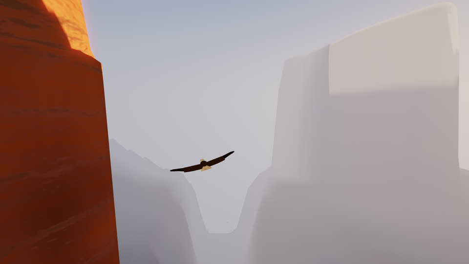
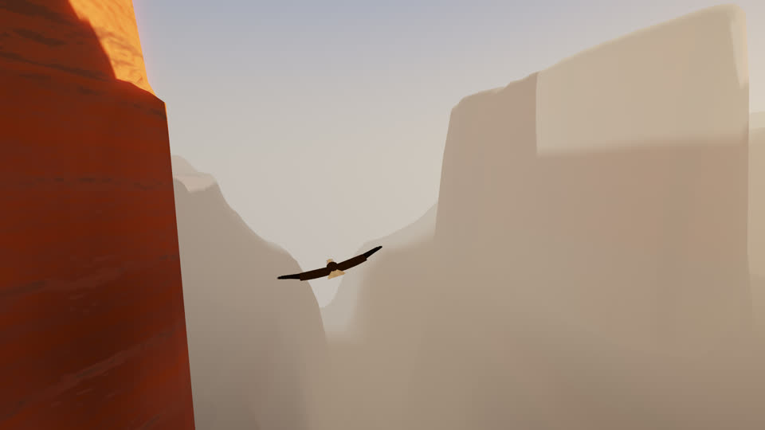
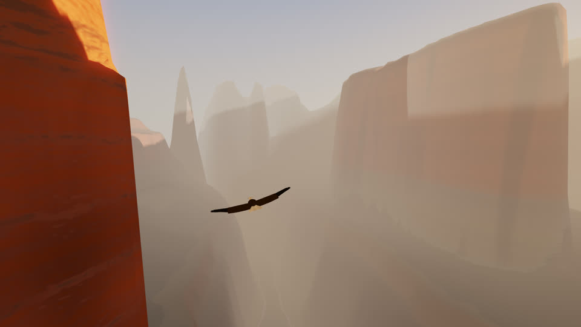
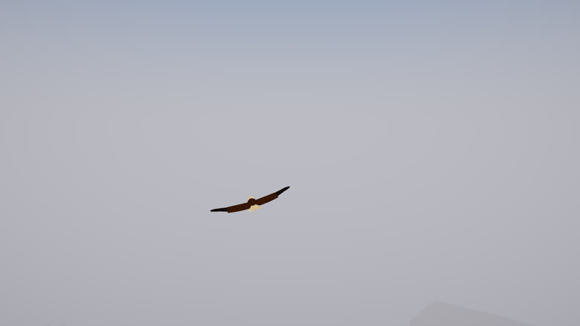
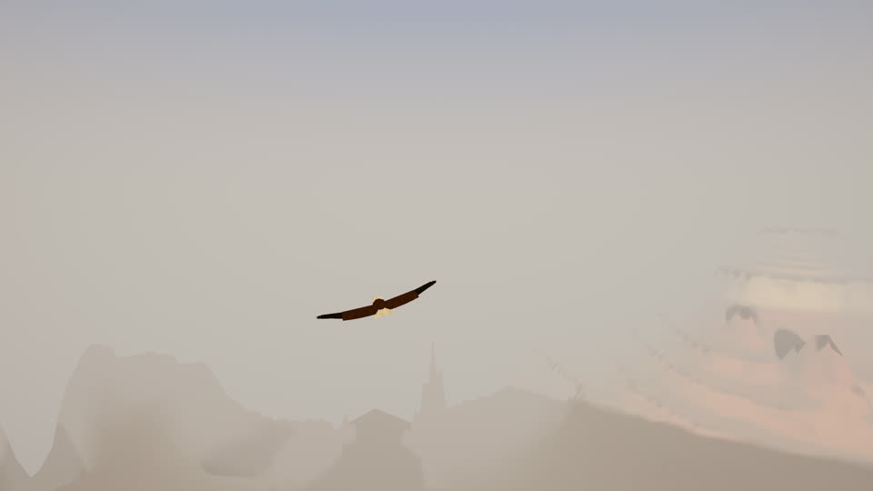
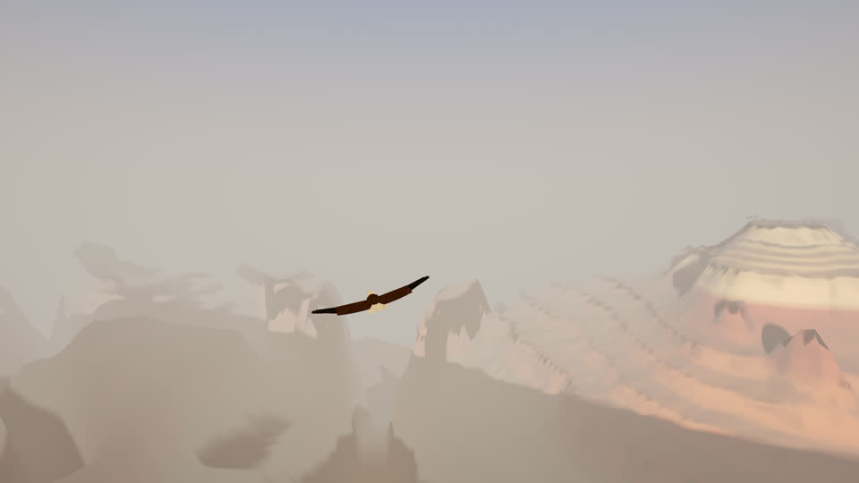
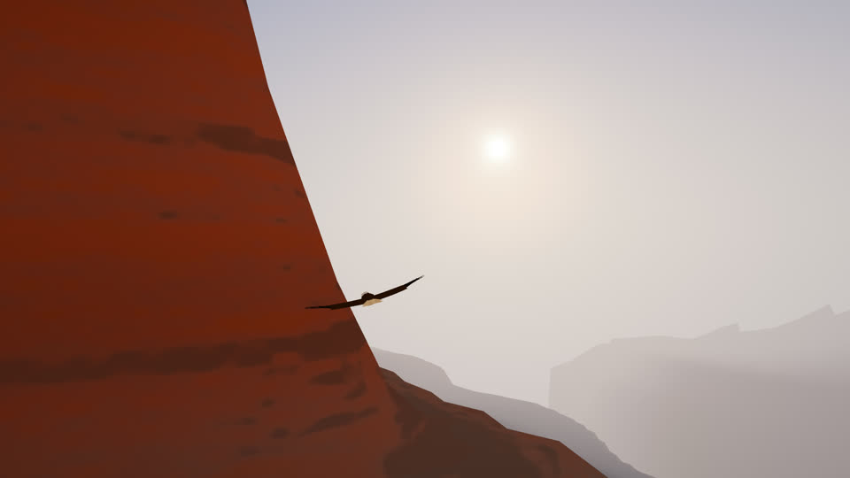
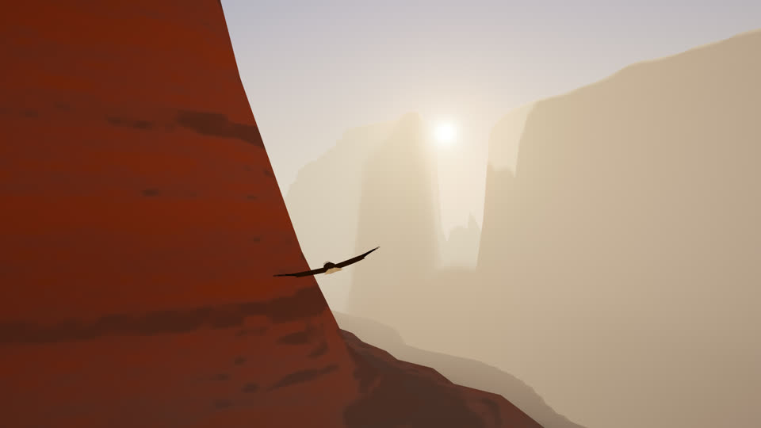
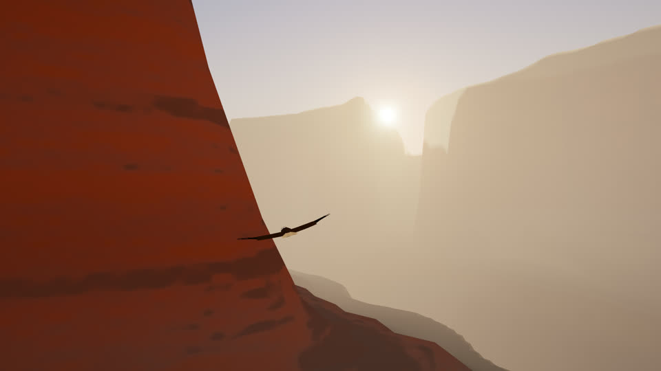

<title>Eagle Canyon First Flight</title>
<meta name="claude:viewport-fit-sides" content="cover">
<link rel="stylesheet" href="https://fonts.googleapis.com/css2?family=Fraunces:opsz,wght@9..144,600&family=Inter:wght@400;600&display=swap">
<style>
/* layout: one reading column; the haze question breaks out into a wide 3-column picture grid */
:root {
  --bg: #f6f1ea; --fg: #2a1d16; --muted: #6d5c50; --card: #fffaf3; --line: #e2d5c6; --accent: #b4532a; --accent-fg: #fff;
  --display: "Fraunces", Georgia, serif; --text: "Inter", system-ui, sans-serif;
}
@media (prefers-color-scheme: dark) { :root:not([data-theme="light"]) { --bg: #1b1411; --fg: #f1e6db; --muted: #b9a596; --card: #251c17; --line: #3d2f27; --accent: #e07a48; --accent-fg: #1b1411; color-scheme: dark } }
:root[data-theme="dark"] { --bg: #1b1411; --fg: #f1e6db; --muted: #b9a596; --card: #251c17; --line: #3d2f27; --accent: #e07a48; --accent-fg: #1b1411; color-scheme: dark }
body { background: var(--bg); color: var(--fg); font: 16px/1.55 var(--text); }
main { max-width: 1180px; margin: 0 auto; padding-block: 32px 64px; padding-left: max(16px, env(safe-area-inset-left, 0px)); padding-right: max(16px, env(safe-area-inset-right, 0px)); display: grid; gap: 40px; }
.col { max-width: 68ch; }
h1, h2 { font-family: var(--display); font-weight: 600; text-wrap: balance; margin: 0; line-height: 1.15; }
h1 { font-size: clamp(30px, 5vw, 46px); }
h2 { font-size: 24px; }
p { margin: 0; }
.stack { display: grid; gap: 12px; }
.lede { color: var(--muted); font-size: 17px; }
code, .path { font: 14px/1.4 ui-monospace, Menlo, monospace; background: var(--card); border: 1px solid var(--line); border-radius: 6px; padding: 2px 6px; user-select: all; overflow-wrap: anywhere; }
.hero { width: 100%; border-radius: 10px; display: block; }
.grid { display: grid; grid-template-columns: auto repeat(3, minmax(0, 1fr)); gap: 8px; align-items: center; overflow-x: auto; }
.grid img { width: 100%; border-radius: 6px; display: block; }
.grid .h { font-weight: 600; text-align: center; font-size: 14px; }
.grid .r { font-size: 13px; color: var(--muted); writing-mode: vertical-rl; transform: rotate(180deg); text-align: center; }
.choices { display: flex; flex-wrap: wrap; gap: 8px; }
.choices label { display: flex; align-items: center; gap: 8px; padding: 8px 14px; border: 1px solid var(--line); border-radius: 999px; background: var(--card); cursor: pointer; }
.choices input { accent-color: var(--accent); }
.choices label:has(input:checked) { border-color: var(--accent); box-shadow: inset 0 0 0 1px var(--accent); }
.rec { font-size: 12px; letter-spacing: .06em; text-transform: uppercase; color: var(--accent); font-weight: 600; }
textarea { width: 100%; min-height: 64px; box-sizing: border-box; font: inherit; padding: 10px; border-radius: 8px; border: 1px solid var(--line); background: var(--card); color: var(--fg); }
button { font: 600 16px var(--text); padding: 12px 22px; border-radius: 8px; border: 0; background: var(--accent); color: var(--accent-fg); cursor: pointer; justify-self: start; }
button:focus-visible, input:focus-visible, textarea:focus-visible { outline: 3px solid var(--accent); outline-offset: 2px; }
#status { color: var(--muted); font-size: 14px; }
table { border-collapse: collapse; font-size: 14px; font-variant-numeric: tabular-nums; min-width: 560px; }
td, th { text-align: left; padding: 6px 10px; border-bottom: 1px solid var(--line); vertical-align: top; }
.scroll { overflow-x: auto; }
.pass { color: #2f7d3b; font-weight: 600; } .fail { color: #b3261e; font-weight: 600; }
:root[data-theme="dark"] .pass, .pass { }
.q { display: grid; gap: 14px; padding-top: 24px; border-top: 1px solid var(--line); }
@media (max-width: 640px) { .grid { grid-template-columns: repeat(3, minmax(120px, 1fr)); } .grid .r, .grid .corner { display: none; } }
</style>

<main>
  <section class="stack col">
    <h1>Eagle Canyon, first flight</h1>
    <p class="lede">A bald eagle in the Grand Canyon, flying at dusk through haze. It's the first run of the bird game spike: a playable prototype in one web page, made entirely in code, kept apart from Chimneys. Three questions below. Your answers are saved on this page.</p>
  </section>

  

  <section class="stack col">
    <h2>How to try it</h2>
    <p>Open this file in Chrome: <span class="path">~/Documents/eagle-canyon/index.html</span>, then click Fly.</p>
    <p><b>W</b> or <b>Space</b> flaps to climb. <b>A</b>/<b>D</b> or the mouse bank and turn. Mouse up and down tilts the nose. Hold <b>Shift</b> to dive, <b>S</b> to slow down. Birds circling in the air mark rising warm air: circle inside it to climb. <b>[</b> and <b>]</b> make the haze thinner or thicker while you fly. Hitting rock bumps you; you can't die.</p>
  </section>

  <section class="q" id="q-fog">
    <div class="col stack">
      <h2>1. Which haze distance feels like weather, not a wall?</h2>
      <p>The haze is how the game stays light enough for this laptop: past the haze, nothing gets drawn. Here is the same spot at three distances.</p>
      <p><b>Updated after your answers:</b> 600 m is now the default, and the haze is warmer and thinner at rim height. The 400 m and 600 m stills show the new haze; the 250 m ones are from before.</p>
    </div>
    <div class="grid">
      <span class="corner"></span><span class="h">250 m</span><span class="h">400 m</span><span class="h">600 m</span>
      <span class="r">Along a wall</span>
      <span class="r">Rim edge</span>
      <span class="r">Into the sun</span>
    </div>
    <div class="col stack">
      <p class="rec">Recommended: 600 m. It reads most like air in the reviews, and it costs only about 1.3 ms more per frame than 250 m</p>
      <div class="choices" role="radiogroup" aria-label="Haze distance">
        <label><input type="radio" name="fog" id="fog-250" value="250"> 250 m</label>
        <label><input type="radio" name="fog" id="fog-400" value="400"> 400 m</label>
        <label><input type="radio" name="fog" id="fog-600" value="600"> 600 m</label>
        <label><input type="radio" name="fog" id="fog-none" value="none"> None of them</label>
      </div>
      <textarea id="fog-note" placeholder="Anything about the haze (optional)"></textarea>
    </div>
  </section>

  <section class="q col" id="q-keep">
    <h2>2. After five minutes, how much do you want to keep flying?</h2>
    <p>Fly for five minutes and stop whenever you like. Then pick: 1 means "I was done before five minutes", 5 means "I didn't want to stop".</p>
    <p class="rec">The prediction to beat: 4 or more</p>
    <div class="choices" role="radiogroup" aria-label="Want to keep flying, 1 to 5">
      <label><input type="radio" name="keep" id="keep-1" value="1"> 1</label>
      <label><input type="radio" name="keep" id="keep-2" value="2"> 2</label>
      <label><input type="radio" name="keep" id="keep-3" value="3"> 3</label>
      <label><input type="radio" name="keep" id="keep-4" value="4"> 4</label>
      <label><input type="radio" name="keep" id="keep-5" value="5"> 5</label>
    </div>
    <textarea id="keep-note" placeholder="What made you stop, or keep going? How long did you fly? (optional)"></textarea>
  </section>

  <section class="q col" id="q-next">
    <h2>3. What should exploring give you next?</h2>
    <p>Pick any that appeal.</p>
    <p class="rec">Recommended: places to find that fill in a map</p>
    <div class="choices">
      <label><input type="checkbox" name="next" id="next-map" value="map"> Places to find (a waterfall, a cliff dwelling, an old mine) that fill in a map</label>
      <label><input type="checkbox" name="next" id="next-nest" value="nest"> A nest to come back to and build up</label>
      <label><input type="checkbox" name="next" id="next-air" value="air"> Riding the air: thermals, updrafts, gusts that take skill</label>
      <label><input type="checkbox" name="next" id="next-hunt" value="hunt"> Fishing: dive at the river to catch fish</label>
      <label><input type="checkbox" name="next" id="next-time" value="time"> Time passing: the haze and light change from dawn to night</label>
      <label><input type="checkbox" name="next" id="next-view" value="view"> Nothing more: the view is enough</label>
    </div>
    <textarea id="next-note" placeholder="Your own idea (optional)"></textarea>
  </section>

  <section class="col stack">
    <button id="save" type="button">Save my answers</button>
    <p id="status" aria-live="polite">Loading saved answers…</p>
  </section>

  <section class="q" id="numbers">
    <div class="col stack">
      <h2>What we measured</h2>
      <p>Predictions written on 15 Nov, before anything was built. Measured on this MacBook in Chrome, with Unity closed and one copy of the game running.</p>
    </div>
    <div class="scroll"><table>
<thead><tr><th>#</th><th>Prediction (15 Nov)</th><th>Measured (16 Nov)</th><th>Result</th></tr></thead>
<tbody>
<tr><td>P0</td><td>Abyssal Garden unchanged, Medium, 1080p window: the baseline</td><td>Holds 60 fps only by shrinking to 942×530 (24% of the pixels) at its shortest draw distance; GPU 12.9 ms</td><td>Recorded</td></tr>
<tr><td>P1</td><td>Eagle build, Medium, haze 400 m, full 1080p: at least 60 fps, GPU 12 ms or less, no frame over 25 ms</td><td>60 fps; GPU 7.0 ms on average (slowest 1% 12.9 ms, worst 14.7 ms); worst frame 18.3 ms</td><td class="pass">Pass</td></tr>
<tr><td>P2</td><td>GPU time at 600 m no more than 1.5 times the time at 250 m</td><td>8.3 ms vs 6.9 ms: 1.19 times. Haze distance is a weak cost lever here: the per-pixel shading costs more than the distance</td><td class="pass">Pass</td></tr>
<tr><td>P3</td><td>The file is 300 KB or less, minified</td><td>55 KB (23 KB zipped)</td><td class="pass">Pass</td></tr>
<tr><td>P4</td><td>After 5 minutes you rate "keep flying" 4 or more, and pick a haze that reads as weather</td><td>3 out of 5 ("I need more diversity in my terrain"); haze 600 m</td><td class="fail">Miss</td></tr>
<tr><td>Kill</td><td>Under 45 fps at 720p with haze 250 m kills this approach</td><td>60 fps, GPU 4.2 ms</td><td class="pass">Far from it</td></tr>
</tbody></table></div>
  </section>
</main>

<script>
const DOC = 'answers/eagle-1';
const $ = (id) => document.getElementById(id);
const status = $('status');
let db = null;
function read() {
  const r = (n) => (document.querySelector(`input[name="${n}"]:checked`) || {}).value || null;
  return { fog: r('fog'), fogNote: $('fog-note').value, keep: r('keep') ? +r('keep') : null, keepNote: $('keep-note').value,
    next: [...document.querySelectorAll('input[name="next"]:checked')].map((i) => i.value), nextNote: $('next-note').value };
}
function fill(a) {
  if (!a) return;
  if (a.fog) { const i = $('fog-' + a.fog); if (i) i.checked = true; }
  if (a.keep) { const i = $('keep-' + a.keep); if (i) i.checked = true; }
  (a.next || []).forEach((v) => { const i = $('next-' + v); if (i) i.checked = true; });
  $('fog-note').value = a.fogNote || ''; $('keep-note').value = a.keepNote || ''; $('next-note').value = a.nextNote || '';
}
(async () => {
  const timer = setTimeout(() => { if (!db) status.textContent = 'Saving is not available in this view. You can still read the page.'; }, 10000);
  db = await window.claude?.use?.('db');
  clearTimeout(timer);
  if (!db) { status.textContent = 'Saving is not available in this view. You can still read the page.'; $('save').disabled = true; return; }
  try { const s = await db.doc(DOC).get(); if (s && s.exists) { fill(s.data()); status.textContent = 'Your saved answers are filled in.'; } else status.textContent = 'Nothing saved yet.'; }
  catch { status.textContent = 'Could not load saved answers.'; }
})();
$('save').addEventListener('click', async () => {
  if (!db) return;
  status.textContent = 'Saving…';
  try { await db.doc(DOC).set({ ...read(), savedAt: new Date().toISOString() }); status.textContent = 'Saved.'; }
  catch (e) { status.textContent = 'Could not save: ' + (e && e.message || 'unknown error') + '. Try again.'; }
});
</script>
